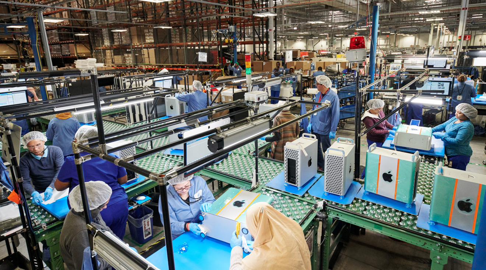
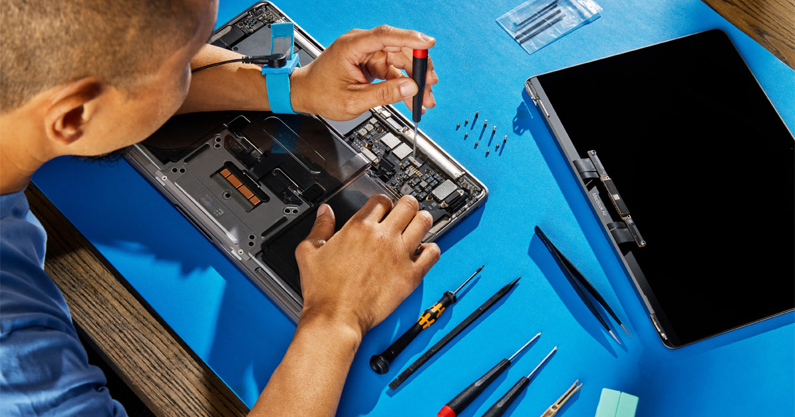

Aluminium enclosure
The best-behaved material here. Apple states the 13-inch MacBook Air enclosure is made with recycled aluminium (Apple Inc., 2020).
RecyclableCircular economy · Student blog
I spent a week looking at my MacBook Air M5 the way a materials engineer would: what it's made of, where the damage really happens, and what would have to change for it to stop being a four-year product.
Start the teardownThe MacBook Air M5 is a thin aluminium laptop built around Apple's M5 chip. I use it for coding, for my university practices, for streaming, and for my work as Head of Tech at a startup. It is the device I open first in the morning and close last at night.
It also belongs to a category of products that start to feel disposable after a couple of years — not because they break, but because the OS stops updating or a newer model appears. A lot of working laptops end up in a drawer when they could easily get a second life running Linux.
What surprised me while researching this is that Apple publishes a Product Environmental Report for every device, so most of the numbers on this page are not guesses — they come from that document (Apple Inc., 2020).
Right now the path is a straight line that ends in a bin. Flip the switch to see the same five stages with the return routes a circular design would add.
In the linear version every arrow points one way. Once the device stops being wanted, the aluminium, gold and cobalt inside it stop being available to anyone.
Almost everything in this laptop could be recycled. In practice recovery rates stay low, because the materials are bonded together and separating them needs machinery most recyclers don't have. Filter by property to see the pattern.
The best-behaved material here. Apple states the 13-inch MacBook Air enclosure is made with recycled aluminium (Apple Inc., 2020).
RecyclableRecyclable but complicated. Handled badly it becomes a fire risk and a source of contamination.
RecyclableToxic riskGold, copper and other metals sit here. The recycling process exists but is expensive and not available everywhere.
RecyclableHard to recoverApple states the LCD is mercury free and the display glass is arsenic free (Apple Inc., 2020).
RecyclableIn the magnets and speakers. Technically recyclable, but very hard to recover with today's technology. This is the biggest open problem.
Hard to recoverRecyclable in theory, but rarely separated at end of life, so most of it is simply lost.
Hard to recoverNo materials match that filter.
The biggest environmental impact of this laptop is not you leaving it plugged in overnight. It is the day it was built.
Share of total greenhouse gas emissions of a MacBook Air (Apple Inc., 2020).
That split changes what "being sustainable" means. The most useful thing a person can do is not to dim the screen — it is to keep the laptop for two more years before buying the next one.
Cobalt and rare earths come from mining operations that in some regions have been linked to poor labour conditions. Apple has been working on responsible sourcing, but it remains an industry-wide problem (Apple Inc., 2020).

The goal is not to invent a different laptop. It is to change how this one is designed, used and recovered.
Most of the waste starts as a design decision. The battery is glued to the case and the RAM is soldered to the board, so one failing part usually condemns the whole assembly. A redesign would:
A small failure would stop meaning a whole new device.
This is where reuse, repair, refurbishment and recycling actually live:

Harder here, because a laptop is not a biological product. There are still routes:
The Ellen MacArthur Foundation describes a system where technical materials such as metals and plastics stay in circulation through reuse, repair, remanufacture and recycling, while biological materials return safely to the earth (Ellen MacArthur Foundation, 2021). Drawing my laptop onto it made one thing obvious: almost all of it belongs on the technical wing. You don't compost a MacBook.
The four loops on the right are ordered by how much value they keep. Sharing and maintaining preserve the most; recycling is the last resort, not the goal.
For the redesigned MacBook Air, two circular models fit together rather than compete.
The biggest opportunity is simply keeping the laptop working. Apple could expand programmes like Apple Renew with discounted repairs, battery replacements and certified refurbished units at a lower price point.
That opens a market of buyers who can't afford a new MacBook but would happily buy a good refurbished one — and it cuts demand for new raw materials at the same time.
A subscription aimed at students and businesses. Instead of buying, you pay monthly and Apple keeps ownership of the device, handling upgrades, repairs and eventually take-back for refurbishment or recycling.
This flips the incentive: the manufacturer now benefits from a laptop that lasts, because they are the ones holding it at end of life — not the customer.
Apple could keep selling units the traditional way, but with a real life-extension and take-back programme running underneath, plus a subscription tier for people who don't want to own the device long term.
Value for the company: recurring revenue and a stronger relationship with the customer. Value for the planet: less material pulled out of the ground every year.
| Selling units | Circular model | |
|---|---|---|
| Revenue comes from | New devices sold | Repairs, refurbished units, subscriptions |
| A long-lasting laptop is | A lost sale | A cheaper asset to keep serving |
| Who owns end of life | The customer | The manufacturer |
| Design pressure | Thinner, sealed, glued | Modular, openable, standardised |
Hold on to devices longer and choose repair over replacement. Given that 47% of the footprint is already spent before the laptop reaches you, the extra year you keep it is the cheapest climate action available.
Design for disassembly and run take-back programmes that are operations, not marketing. Refurbishment and subscription models create real business that doesn't depend on constant new production.
Extending the life of one laptop avoids the emissions of building another one. That is the whole argument.